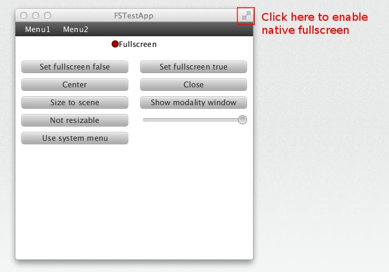

This test verifies modal window enters and exits Mac OS X native full screen mode properly.
Test workflow:
- Only for Mac OS X 10.7 or higher! Please mark the test as PASS on other platforms.
- Click "Show modality window" button.
- Switch the modal window to native full screen mode. Modal window should switch to native full screen mode successfully.
- Exit native full screen mode.
- You should see the modal window in normal mode; you should see the first window behind it.
- Close the modal window.
- You should see the first window in normal mode.
- There should be no errors.
To enter native full screen mode:
